R code for example in Chapter 17:
Regression
We used R to analyze all examples in Chapter 16. We put the code here so that you can too.
Also see our R lab on linear regression.
New methods on this page
-
Linear regression:
lionRegression <- lm(ageInYears ~ proportionBlack, data = lion) summary(lionRegression) -
95% confidence interval for the slope:
confint(lionRegression) -
Predict mean y on a regression line corresponding to a given x-value:
predict(lionRegression, data.frame(proportionBlack = 0.50), se.fit = TRUE) -
ANOVA test of zero regression slope:
anova(prairieRegression) -
Other new methods:
- 95% confidence bands.
- 95% prediction intervals.
- Scatter plot smoothing.
- Nonlinear regression.
- Logistic regression.
Load required packages
If you want to try the geom_spline() function for scatter plot smoothing using splines, you need to install the ggformula package on your computer. Load the MASS package for logistic regression.
install.packages("binom", dependencies = TRUE) # optionalLoad the ggplot2 package for graphs.
library(ggplot2)
library(ggformula) # optional
library(MASS)Example 17.1. Lion noses
Estimate a linear regression and calculate predicted values and their uncertainty for the relationship between lion age and proportion of black on the lion nose.
Read and inspect data
lion <- read.csv(url("https://whitlockschluter3e.zoology.ubc.ca/Data/chapter17/chap17e1LionNoses.csv"), stringsAsFactors = FALSE)
head(lion)## proportionBlack ageInYears
## 1 0.21 1.1
## 2 0.14 1.5
## 3 0.11 1.9
## 4 0.13 2.2
## 5 0.12 2.6
## 6 0.13 3.2Scatter plot
This command produces the plot in Figure 17.1-1.
ggplot(lion, aes(proportionBlack, ageInYears)) +
geom_point(size = 3, col = "firebrick") +
labs(x = "Proportion black", y = "Age (years)") +
theme_classic()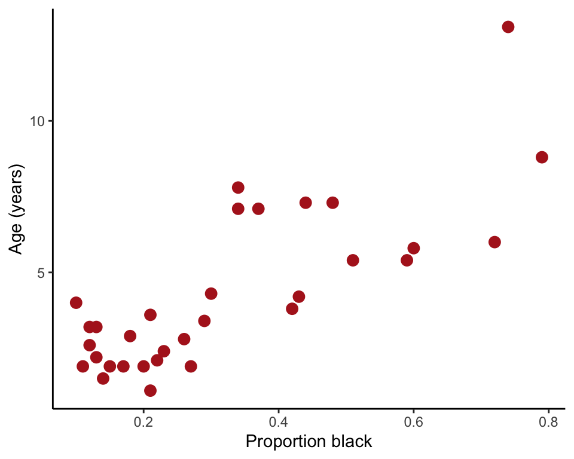
Fit regression line
Fit the linear regression to the data using least squares. Use lm(), which was also used for ANOVA. Save the results into a model object, and then use other commands to extract the quantities wanted.
lionRegression <- lm(ageInYears ~ proportionBlack, data = lion)Slope and intercept of the best fit line, along with their standard errors, are extracted with the summary() function. Extract just the coefficients with coef(lionRegression).
summary(lionRegression)##
## Call:
## lm(formula = ageInYears ~ proportionBlack, data = lion)
##
## Residuals:
## Min 1Q Median 3Q Max
## -2.5449 -1.1117 -0.5285 0.9635 4.3421
##
## Coefficients:
## Estimate Std. Error t value Pr(>|t|)
## (Intercept) 0.8790 0.5688 1.545 0.133
## proportionBlack 10.6471 1.5095 7.053 7.68e-08 ***
## ---
## Signif. codes: 0 '***' 0.001 '**' 0.01 '*' 0.05 '.' 0.1 ' ' 1
##
## Residual standard error: 1.669 on 30 degrees of freedom
## Multiple R-squared: 0.6238, Adjusted R-squared: 0.6113
## F-statistic: 49.75 on 1 and 30 DF, p-value: 7.677e-0895& CI for intercept and slope
confint(lionRegression)## 2.5 % 97.5 %
## (Intercept) -0.2826733 2.040686
## proportionBlack 7.5643082 13.729931Add line to scatter plot
Overlay the least squares regression line onto the plot (Figure 17.1-4) using geom_smooth().
ggplot(lion, aes(proportionBlack, ageInYears)) +
geom_point(size = 3, col = "firebrick") +
geom_smooth(method = "lm", se = FALSE, col = "black") +
labs(x = "Proportion black", y = "Age (years)") +
theme_classic()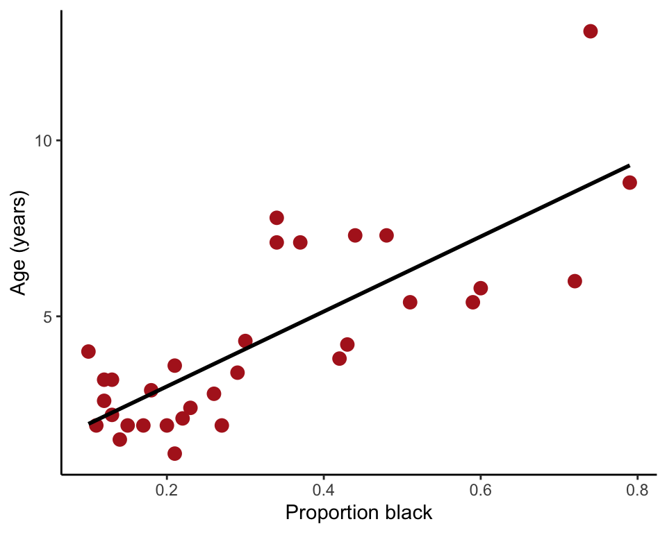
Use line to predict
Use the regression line for prediction. For example, here is how to predict mean lion age corresponding to a value of 0.50 of proportion black in the nose.
yhat <- predict(lionRegression, data.frame(proportionBlack = 0.50), se.fit = TRUE)
data.frame(yhat)## fit se.fit df residual.scale
## 1 6.202566 0.3988321 30 1.668764In the output, predicted age is indicated by fit and the standard error of the predicted mean age is se.fit
95% confidence bands
The 95% confidence bands measure uncertainty of the predicted mean values on the regression line corresponding to each x-value (Figure 17.2-1, left). The confidence limits are the upper and lower edge of the shaded area in the following plot.
ggplot(lion, aes(proportionBlack, ageInYears)) +
geom_smooth(method = "lm", se = TRUE, col = "black") +
geom_point(size = 3, col = "firebrick") +
labs(x = "Proportion black", y = "Age (years)") +
theme_classic()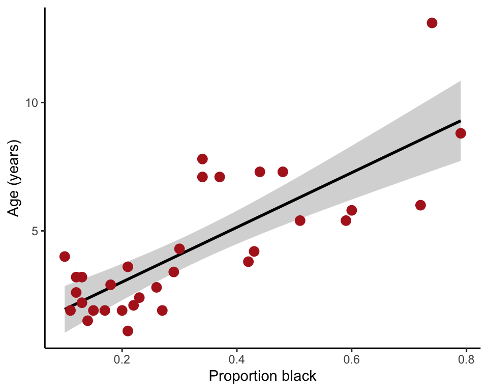
95% Prediction interval
The 95% prediction intervals show the 95% confidence intervals for the predicted value of a new (future) individual, given its value for the x-variable (Figure 17.2-1, right). The prediction interval is wider than the confidence bands because predicting the age of a new individual lion age from the proportion black in its nose has higher uncertainty than predicting the mean age of all lions having that proportion of black on their noses.
lion2 = data.frame(lion, predict(lionRegression, interval = "prediction"))## Warning in predict.lm(lionRegression, interval = "prediction"): predictions on current data refer to _future_ responsesggplot(lion2, aes(proportionBlack, ageInYears)) +
geom_ribbon(aes(ymin = lwr, ymax = upr, fill='prediction'),
fill = "black", alpha = 0.2) +
geom_smooth(method = "lm", se = FALSE, col = "black") +
geom_point(size = 3, col = "firebrick") +
labs(x = "Proportion black", y = "Age (years)") +
theme_classic()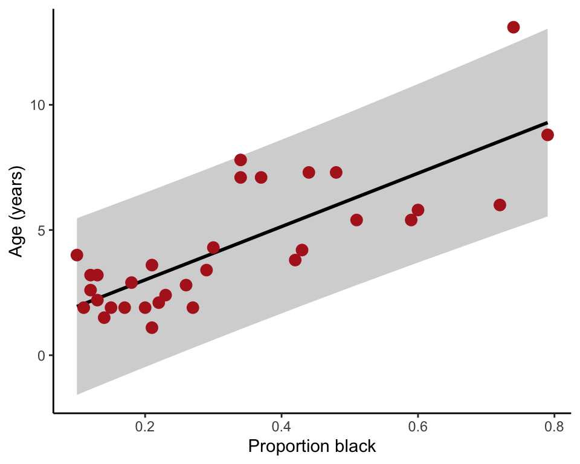
Example 17.3. Prairie home campion
Test the null hypothesis of zero regression slope. The data are from an experiment investigating the effect of plant species diversity on the stability of plant biomass production.
Read and inspect data
prairie <- read.csv(url("https://whitlockschluter3e.zoology.ubc.ca/Data/chapter17/chap17e3PlantDiversityAndStability.csv"), stringsAsFactors = FALSE)
head(prairie)## nSpecies biomassStability
## 1 1 7.47
## 2 1 6.74
## 3 1 6.61
## 4 1 6.40
## 5 1 5.67
## 6 1 5.26Log-transform
Log-transform stability and include the new variable in the data frame. Inspect the data frame once again to make sure the function worked as intended.
prairie$logStability <- log(prairie$biomassStability)
head(prairie)## nSpecies biomassStability logStability
## 1 1 7.47 2.010895
## 2 1 6.74 1.908060
## 3 1 6.61 1.888584
## 4 1 6.40 1.856298
## 5 1 5.67 1.735189
## 6 1 5.26 1.660131Scatter plot with line
These commands produce the plot Figure 17.3-1.
ggplot(prairie, aes(nSpecies, logStability)) +
geom_point(size = 3, col = "firebrick", shape = 1) +
geom_smooth(method = "lm", se = FALSE, col = "black") +
xlim(0,16) +
labs(x = "Species number treatment",
y = "Log-transformed ecosystem stability") +
theme_classic()
Least squares regression
Fit the least squares linear regression to the data using lm(). Save the results into a model object, and then use summary() to extract the intercept and slope of the fitted regression line.
prairieRegression <- lm(logStability ~ nSpecies, data = prairie)
summary(prairieRegression)##
## Call:
## lm(formula = logStability ~ nSpecies, data = prairie)
##
## Residuals:
## Min 1Q Median 3Q Max
## -0.97148 -0.25984 -0.00234 0.23100 1.03237
##
## Coefficients:
## Estimate Std. Error t value Pr(>|t|)
## (Intercept) 1.198294 0.041298 29.016 < 2e-16 ***
## nSpecies 0.032926 0.004884 6.742 2.73e-10 ***
## ---
## Signif. codes: 0 '***' 0.001 '**' 0.01 '*' 0.05 '.' 0.1 ' ' 1
##
## Residual standard error: 0.3484 on 159 degrees of freedom
## Multiple R-squared: 0.2223, Adjusted R-squared: 0.2174
## F-statistic: 45.45 on 1 and 159 DF, p-value: 2.733e-10\(t\)-test of regression slope
This is provided as part of the output of the summary() command immediately above.
95% CI of regression slope
confint(prairieRegression)## 2.5 % 97.5 %
## (Intercept) 1.11673087 1.27985782
## nSpecies 0.02328063 0.04257117ANOVA test
This method produces the ANOVA table (Table 17.3-2), which includes a test of the null hypothesis that the regression slope is zero.
anova(prairieRegression)## Analysis of Variance Table
##
## Response: logStability
## Df Sum Sq Mean Sq F value Pr(>F)
## nSpecies 1 5.5169 5.5169 45.455 2.733e-10 ***
## Residuals 159 19.2980 0.1214
## ---
## Signif. codes: 0 '***' 0.001 '**' 0.01 '*' 0.05 '.' 0.1 ' ' 1\(R^2\)
The \(R^2\) associated with the regression is part of the output of the summary command.
summary(prairieRegression)$r.squared## [1] 0.2223217Figure 17.5-3. Detecting nonlinearity
Detect a nonlinear relationship graphically, using data on surface area of desert pools and the number of fish species present.
Read and inspect data
desertFish <- read.csv(url("https://whitlockschluter3e.zoology.ubc.ca/Data/chapter17/chap17f5_3DesertPoolFish.csv"), stringsAsFactors = FALSE)
head(desertFish)## poolArea nFishSpecies
## 1 9 1
## 2 20 1
## 3 30 1
## 4 50 1
## 5 200 1
## 6 60 2Scatter plot with line
The plot reveals the poor fit of a straight line (Figure 17.5-3 left).
ggplot(desertFish, aes(poolArea, nFishSpecies)) +
geom_point(size = 3, col = "firebrick") +
geom_smooth(method = "lm", se = FALSE, col = "black") +
labs(x = expression(Area~(m^2)), y = "Number of species") +
theme_classic()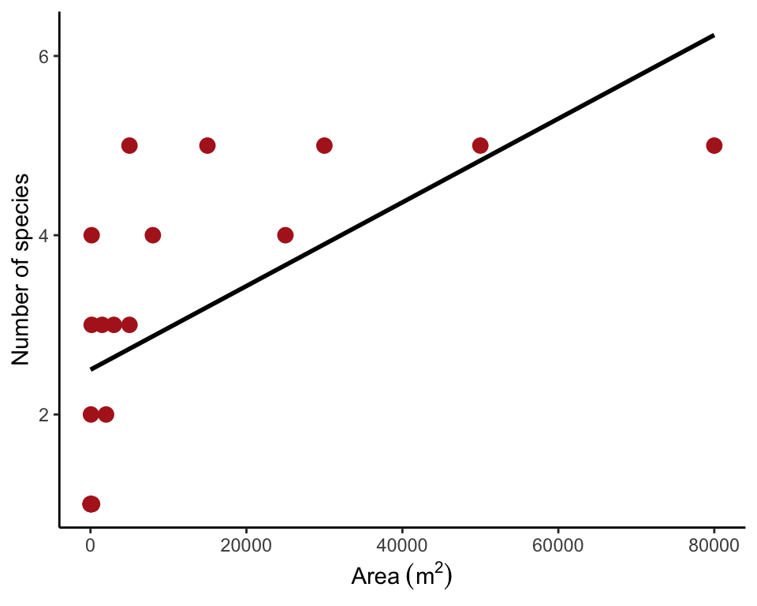
Scatter plot smoothing
This code for Figure 17.5-3 (right) uses geom_spline(), which requires the ggformula package, which extends ggplot(). The dfoption controls the degree of smoothing: a larger number results in a more wiggly curve. Otherwise try using ```geom_smooth(method = “loess”) instead.
ggplot(desertFish, aes(poolArea, nFishSpecies)) +
geom_point(size = 3, col = "firebrick") +
geom_spline(col = "black", df = 2) +
labs(x = expression(Area~(m^2)), y = "Number of species") +
theme_classic()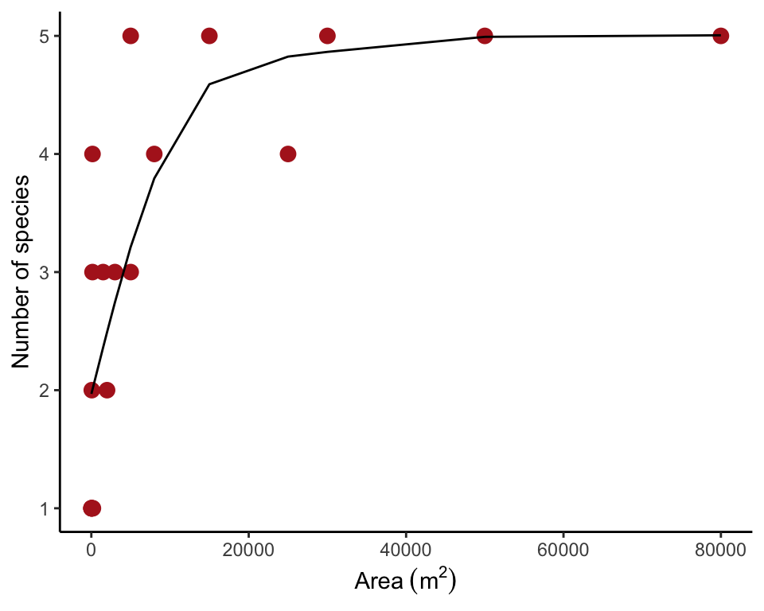
Log-transformed data (Figure 17.6-2)
We log-transformed both variables and saved the results (ln_nFishSpecies, ln_poolArea) in the data frame. Then we made a new scatter plot with the log-transformed variables and added the line to the plot.
desertFish$ln_nFishSpecies <- log(desertFish$nFishSpecies)
desertFish$ln_poolArea <- log(desertFish$poolArea)
ggplot(desertFish, aes(ln_poolArea, ln_nFishSpecies)) +
geom_point(size = 3, col = "firebrick") +
geom_smooth(method = "lm", se = FALSE, col = "black") +
labs(x = "Ln(area)", y = "Ln(number of species)") +
theme_classic()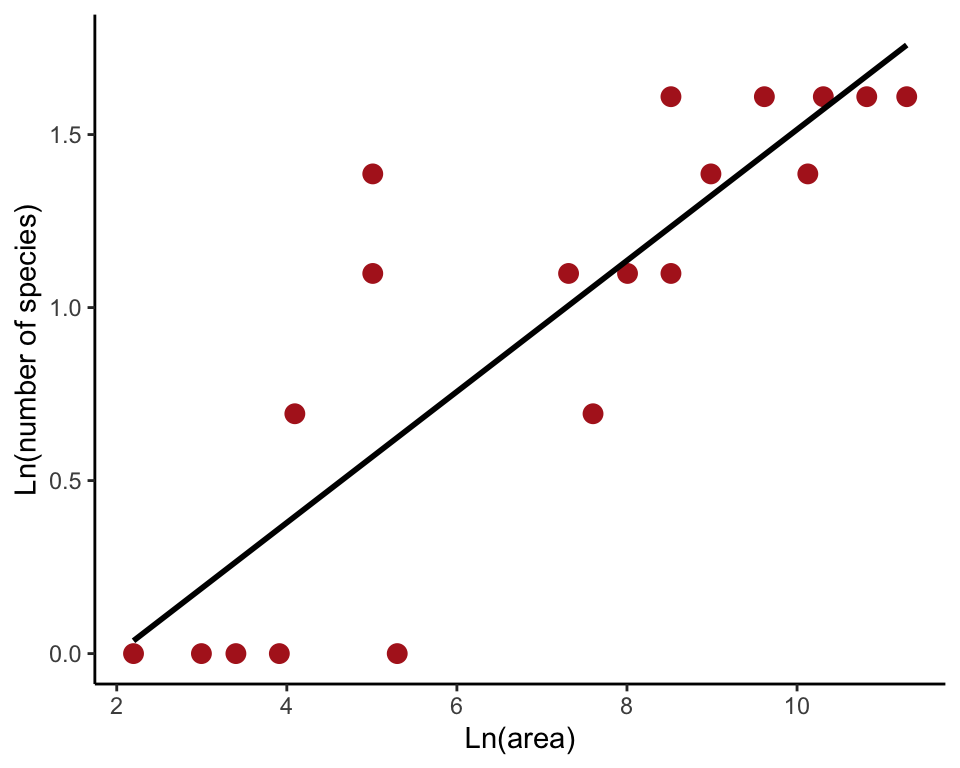
Figure 17.5-4 Residual plots
Using residual plots to detect non-normality and unequal variance.
Blue tit cap color
The plot on the left is from a data set of blue tit cap color of offspring and parents. To begin, read and inspect the data.
capColor <- read.csv(url("https://whitlockschluter3e.zoology.ubc.ca/Data/chapter17/chap17f5_4BlueTitCapColor.csv"), stringsAsFactors = FALSE)
head(capColor)## midparentColorScore offspringColorScore
## 1 -0.62 -0.33
## 2 -0.27 -0.17
## 3 -0.25 -0.23
## 4 -0.12 -0.49
## 5 0.12 -0.59
## 6 0.18 -0.55A quick residual plot can be obtained by plotting an lm() object with the ``plot()``` functon.
capColorRegression <- lm(offspringColorScore ~ midparentColorScore, data = capColor)
plot(capColorRegression, which = 1)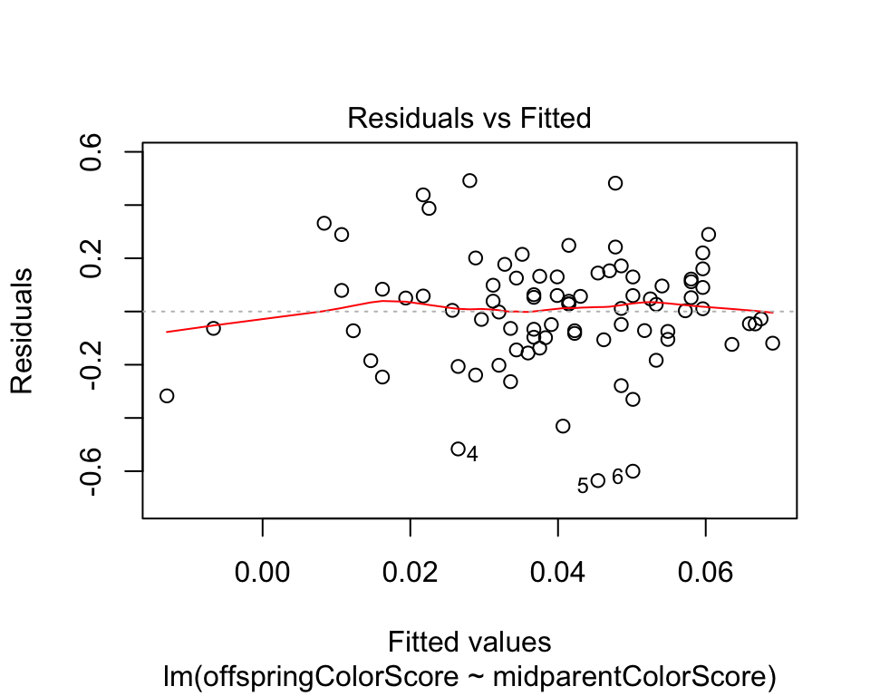
Our Figure 17.5-4 can be reproduced using the following commands. First, fit the linear regression model using lm() and save the residuals in the data frame. Then plot the residuals against the explanatory variable using ggplot().
capColorRegression <- lm(offspringColorScore ~ midparentColorScore, data = capColor)
capColor$residuals <- residuals(capColorRegression)
ggplot(capColor, aes(midparentColorScore, residuals)) +
geom_point(size = 3, col = "firebrick") +
geom_hline(yintercept=0, color = "black") +
labs(x = "Midparent color score", y = "Residuals") +
theme_classic()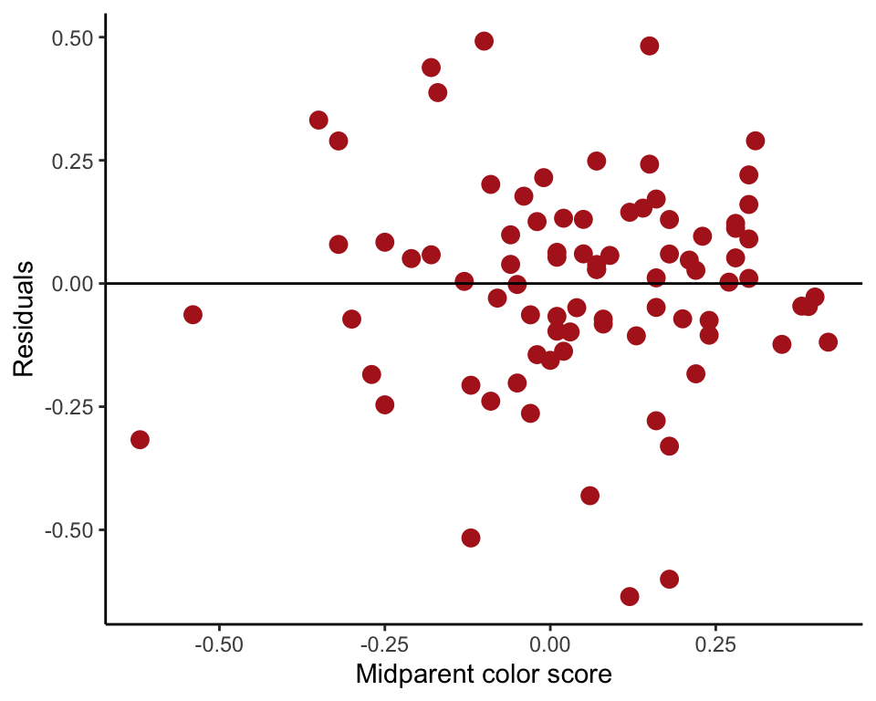
Cockroach neurons
Figure 17.5-4 (right) can be reproduced as follows. The data are firing rates of cockroach neurons at different temperatures. Begin by reading and inspecting the data.
roach <- read.csv(url("https://whitlockschluter3e.zoology.ubc.ca/Data/chapter17/chap17f5_4CockroachNeurons.csv"), stringsAsFactors = FALSE)
head(roach)## temperature rate
## 1 11.9 155.03
## 2 14.4 142.33
## 3 15.3 140.11
## 4 16.4 142.65
## 5 17.9 135.24
## 6 20.4 130.16Next, fit the linear regression model using lm() and save the residuals in the data frame. Then plot the residuals against the explanatory variable.
roachRegression <- lm(rate ~ temperature, data = roach)
roach$residuals <- residuals(roachRegression)
ggplot(roach, aes(temperature, residuals)) +
geom_point(size = 3, col = "firebrick") +
geom_hline(yintercept=0, color = "black") +
labs(x = expression(Temperature~(degree*C)), y = "Residuals") +
theme_classic()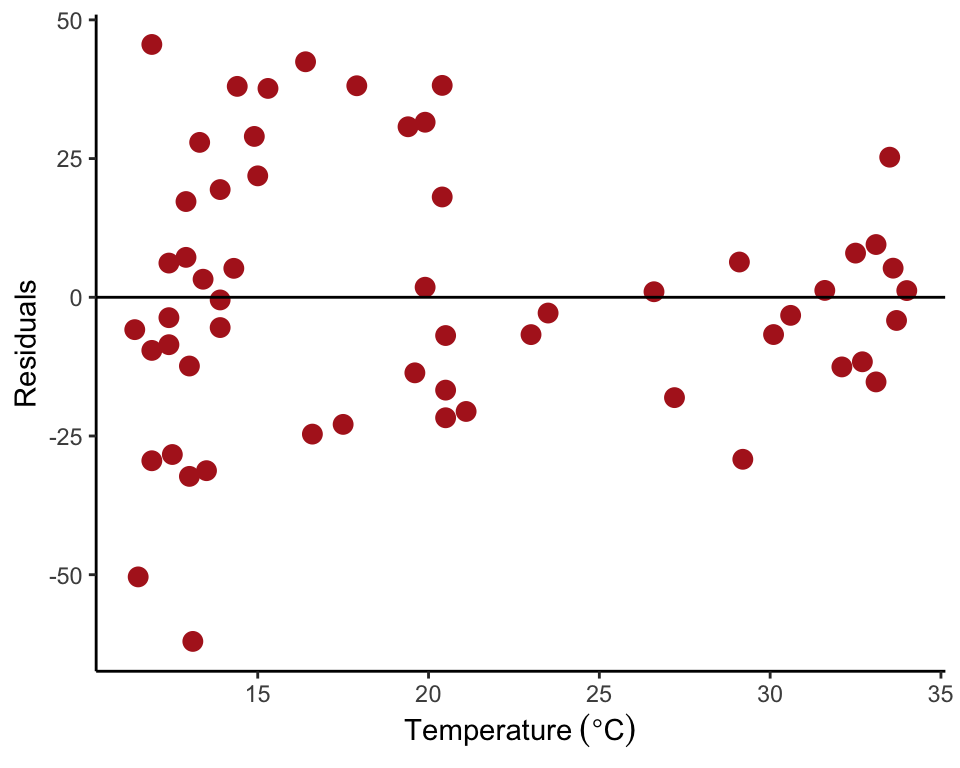
Figure 17.6-3. Iris pollination
Use a square root transformation to improve the fit to assumptions of linear regression. The data are number of pollen grains received and floral tube length of an iris species.
Read and inspect data
iris <- read.csv(url("https://whitlockschluter3e.zoology.ubc.ca/Data/chapter17/chap17f6_3IrisPollination.csv"))
head(iris)## tubeLengthMm grainsDeposited
## 1 38 299
## 2 54 205
## 3 53 167
## 4 55 122
## 5 64 129
## 6 64 64Residual plot untransformed data
A quick residual plot can be obtained by plotting an lm() object with the ``plot()``` command..
irisRegression <- lm(grainsDeposited ~ tubeLengthMm, data = iris)
plot(irisRegression, which = 1)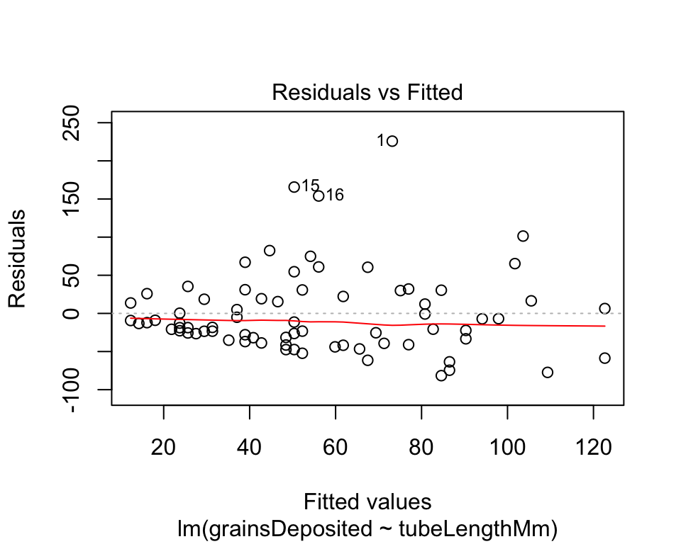
Our Figure 17.6-3 (left) can be reproduced with the following commands. We first fit the linear regression model using lm() and save the residuals in the data frame. Then we plot the residuals against the explanatory variable using ggplot().
irisRegression <- lm(grainsDeposited ~ tubeLengthMm, data = iris)
iris$residuals <- residuals(irisRegression)
ggplot(iris, aes(tubeLengthMm, residuals)) +
geom_point(size = 3, col = "firebrick") +
geom_hline(yintercept=0, color = "black") +
labs(x = "Floral tube length (mm)", y = "Residuals") +
theme_classic()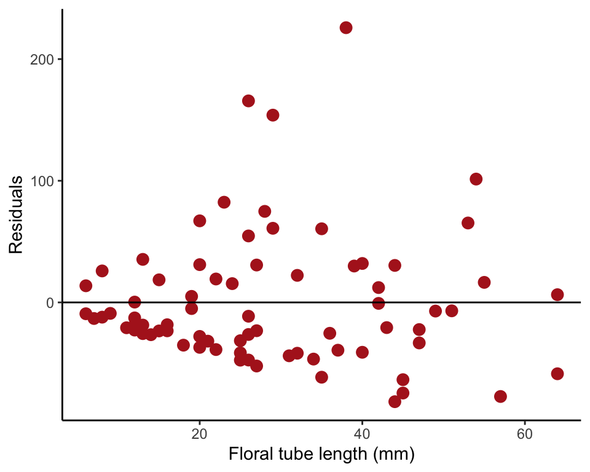
Square root transformation
We square-root transformed the single variable grainsDeposited and saved the resulting new variable (sqRootGrains) to the data frame.
iris$sqRootGrains <- sqrt(iris$grainsDeposited + 1/2)Residual plot transformed data
To make Our Figure 17.6-3 (right) we fitted a linear regression to the tranformed y-variable with lm() and saved the residuals to the data fraom. Then we replotted the residuals.
irisRegressionSqrt <- lm(sqRootGrains ~ tubeLengthMm, data = iris)
iris$residuals <- residuals(irisRegressionSqrt)
ggplot(iris, aes(tubeLengthMm, residuals)) +
geom_point(size = 3, col = "firebrick") +
geom_hline(yintercept=0, color = "black") +
labs(x = "Floral tube length (mm)", y = "Residuals") +
theme_classic()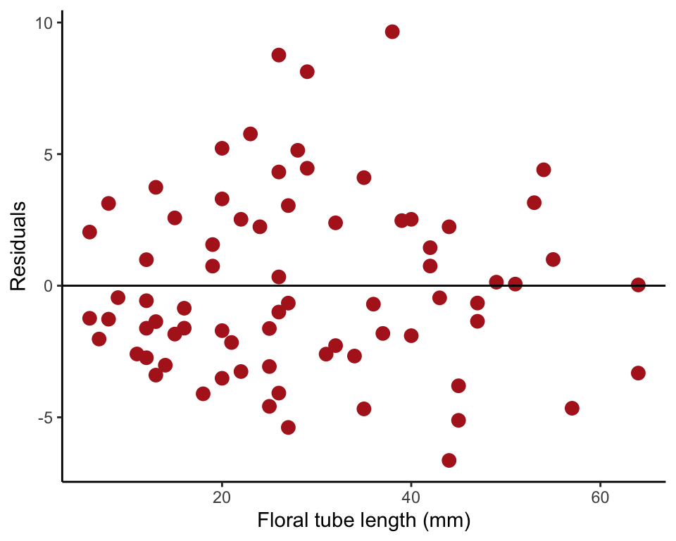
Figure 17.8-1. Phytoplankton growth
Fit a nonlinear regression curve having an asymptote (Michaelis-Menten curve). The data are the relationship between population growth rate of a phytoplankton in culture and the concentration of iron in the medium.
Read and examine data
phytoplankton <- read.csv(url("https://whitlockschluter3e.zoology.ubc.ca/Data/chapter17/chap17f8_1IronAndPhytoplanktonGrowth.csv"), stringsAsFactors = FALSE)
head(phytoplankton)## ironConcentration phytoGrowthRate
## 1 0.01096478 0.00
## 2 0.02398833 0.50
## 3 0.02818383 0.35
## 4 0.07244360 1.04
## 5 0.07585776 0.97
## 6 0.11481536 1.19Scatter plot
ggplot(phytoplankton, aes(ironConcentration, phytoGrowthRate)) +
geom_point(size = 3, col = "firebrick") +
labs(x = expression(paste("Iron concentration (", mu, "mol)")),
y = "Specific growth rate (no./day)") +
theme_classic()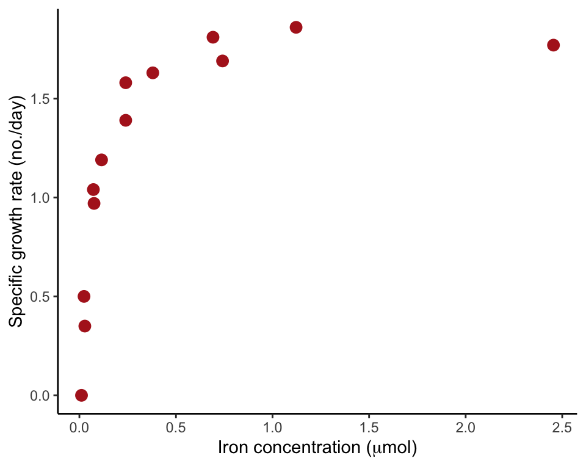
Fit a Michaelis-Menten curve
Use the nls (nonlinear least squares) to fit the curve. Provide a formula that also includes symbols (letters) for the parameters to be estimated. We use “a” and “b” to indicate the parameters of the Michaelis-Menten curve to estimate. The function includes an argument providing an initial guess of parameter values. The value of the initial guess is not so important – here we choose a=1 and b=1 as initial guesses. The first function below carried out the model fit and save the results in an R object named phytoCurve.
phytoCurve <- nls(phytoGrowthRate ~ a*ironConcentration / ( b+ironConcentration),
data = phytoplankton, list(a = 1, b = 1))Use the summary command to view the parameter estimates, including standard errors and t-tests of null hypotheses that parameter values are zero.
summary(phytoCurve)##
## Formula: phytoGrowthRate ~ a * ironConcentration/(b + ironConcentration)
##
## Parameters:
## Estimate Std. Error t value Pr(>|t|)
## a 1.94164 0.06802 28.545 1.14e-11 ***
## b 0.07833 0.01120 6.994 2.29e-05 ***
## ---
## Signif. codes: 0 '***' 0.001 '**' 0.01 '*' 0.05 '.' 0.1 ' ' 1
##
## Residual standard error: 0.1133 on 11 degrees of freedom
##
## Number of iterations to convergence: 6
## Achieved convergence tolerance: 6.672e-06Many of the functions that can be used to extract results from a saved lm object work in the same way when applied to an nls object, such as predict, residuals, and coef.
Add curve to scatter plot
The function geom_smooth() has a nonlinear least squares method that allows you to input the same formula as in the nls() command above.
ggplot(phytoplankton, aes(ironConcentration, phytoGrowthRate)) +
geom_smooth(method = "nls", method.args =
list(formula = y ~ a * x / (b + x), start = list(a = 1, b = 1)),
data = phytoplankton, se = FALSE, col = "black") +
geom_point(size = 3, col = "firebrick") +
labs(x = expression(paste("Iron concentration (", mu, "mol)")),
y = "Specific growth rate (no./day)") +
theme_classic()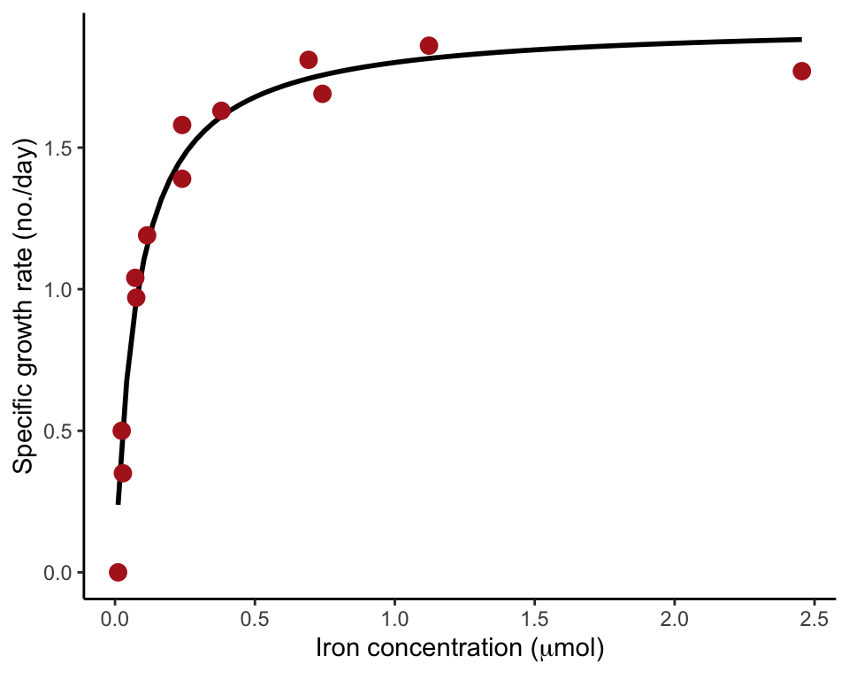
Figure 17.8-2. Pond productivity
Fit a quadratic curve to the relationship between the number of plant species present in ponds and pond productivity.
Read and examine data.
pondProductivity <- read.csv(url("https://whitlockschluter3e.zoology.ubc.ca/Data/chapter17/chap17f8_2PondPlantsAndProductivity.csv"), stringsAsFactors = FALSE)
head(pondProductivity)## productivity species
## 1 4 3
## 2 11 2
## 3 10 1
## 4 10 0
## 5 12 4
## 6 15 4Scatter plot with quadratic curve
Provide geom_smooth() with the formula to add the curve to the scatter plot. Wrap the squared term in the formula with I() so that the arithmetic (x^2) is done before it is entered as a term in the model.
ggplot(pondProductivity, aes(productivity, species)) +
geom_smooth(method = "lm", formula = y ~ x + I(x^2),
color = "black", se = FALSE) +
geom_point(size = 3, col = "firebrick") +
labs(x ="Productivity (g/15 days)", y = "Number of species") +
theme_classic()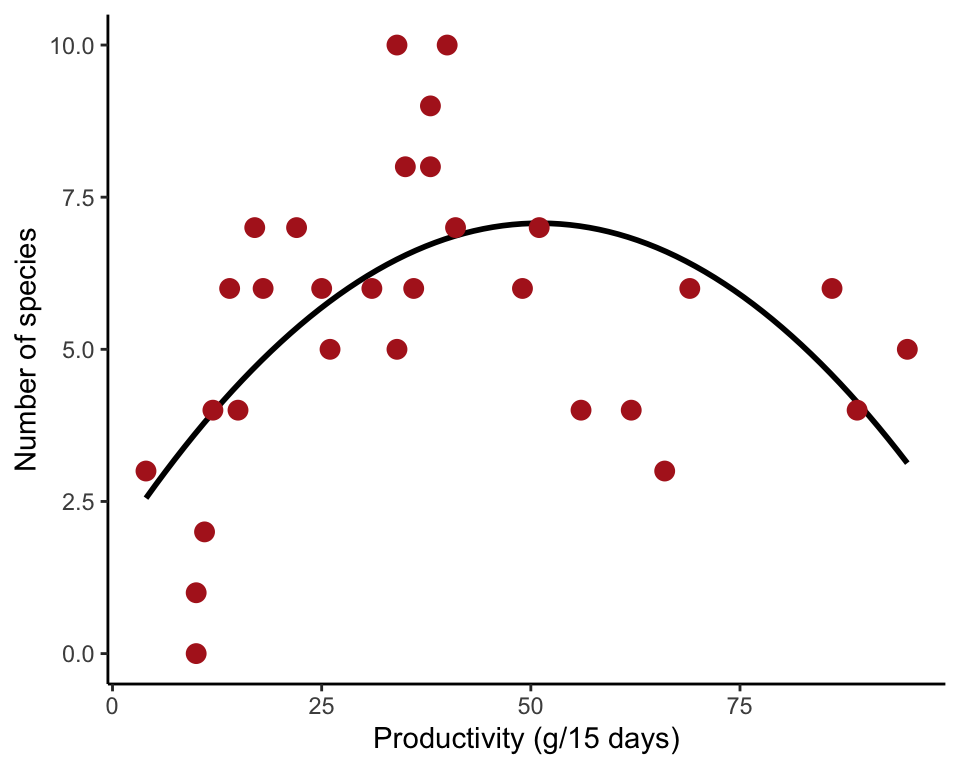
Fit quadratic function
Use lm() to fit a quadratic function to the data. Wrap the squared term with I() so that the arithmetic (productivity^2) is done before it is entered as a term in the model. The results of the model fit are saved in an lm() object productivityCurve. Use summary() to extract estimated cowfficients and standard errors.
productivityCurve <- lm(species ~ productivity + I(productivity^2),
data = pondProductivity)
summary(productivityCurve)##
## Call:
## lm(formula = species ~ productivity + I(productivity^2), data = pondProductivity)
##
## Residuals:
## Min 1Q Median 3Q Max
## -3.6330 -0.9952 -0.0158 1.4458 3.5215
##
## Coefficients:
## Estimate Std. Error t value Pr(>|t|)
## (Intercept) 1.7535477 1.1118289 1.577 0.126401
## productivity 0.2083549 0.0558421 3.731 0.000897 ***
## I(productivity^2) -0.0020407 0.0005677 -3.595 0.001280 **
## ---
## Signif. codes: 0 '***' 0.001 '**' 0.01 '*' 0.05 '.' 0.1 ' ' 1
##
## Residual standard error: 1.999 on 27 degrees of freedom
## Multiple R-squared: 0.3402, Adjusted R-squared: 0.2913
## F-statistic: 6.961 on 2 and 27 DF, p-value: 0.003648Example 17.8. Shrinking seals
Fit a formula-free curve (cubic spline) to the relationship between body length and age for female fur seals.
Read and inspect data
shrink <- read.csv(url("https://whitlockschluter3e.zoology.ubc.ca/Data/chapter17/chap17e8ShrinkingSeals.csv"), stringsAsFactors = FALSE)
head(shrink)## ageInDays length
## 1 5337 131
## 2 2081 123
## 3 2085 122
## 4 4299 136
## 5 2861 122
## 6 5052 131Scatter plot with spline
A small amount of vertical jitter was added to reduce overlap of points.
ggplot(shrink, aes(ageInDays, length)) +
geom_jitter(size = 0.3, col = "firebrick", height = 0.5) +
geom_spline(col = "black", df = 40) +
labs(x = "Female age (days)", y = "Body length (cm)") +
theme_classic()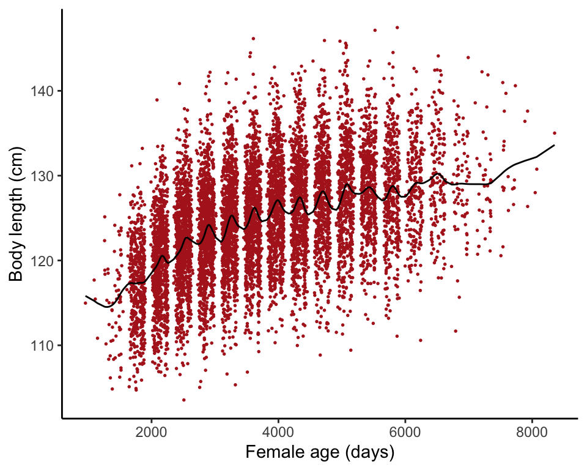
Figure 17.9-1. Guppy cold death
Fit a logistic regression to the relationship between guppy mortality and duration of exposure to a temperature of 5 degrees C.
Read and inspect data
guppy <- read.csv(url("https://whitlockschluter3e.zoology.ubc.ca/Data/chapter17/chap17f9_1GuppyColdDeath.csv"), stringsAsFactors = FALSE)
head(guppy)## fish exposureDurationMin mortality
## 1 1 3 1
## 2 2 3 1
## 3 3 3 1
## 4 4 3 1
## 5 5 3 1
## 6 6 3 1Frequency table
Tabulate mortality at different exposure times (Table 17.9-1).
table(guppy$mortality, guppy$exposureDurationMin,
dnn = c("Mortality","Exposure (min)"))## Exposure (min)
## Mortality 3 8 12 18
## 0 29 16 11 2
## 1 11 24 29 38Scatter plot logistic curve
The points are jittered sightly to minimize overlap.
ggplot(guppy, aes(exposureDurationMin, mortality)) +
geom_smooth(method = "glm", se = FALSE, color = "black",
method.args = list(family = "binomial")) +
geom_jitter(shape = 1, col = "firebrick", size = 3,
height = 0.02, width = 0.5) +
labs(x = "Duration of exposure (min)", y = "Mortality") +
theme_classic()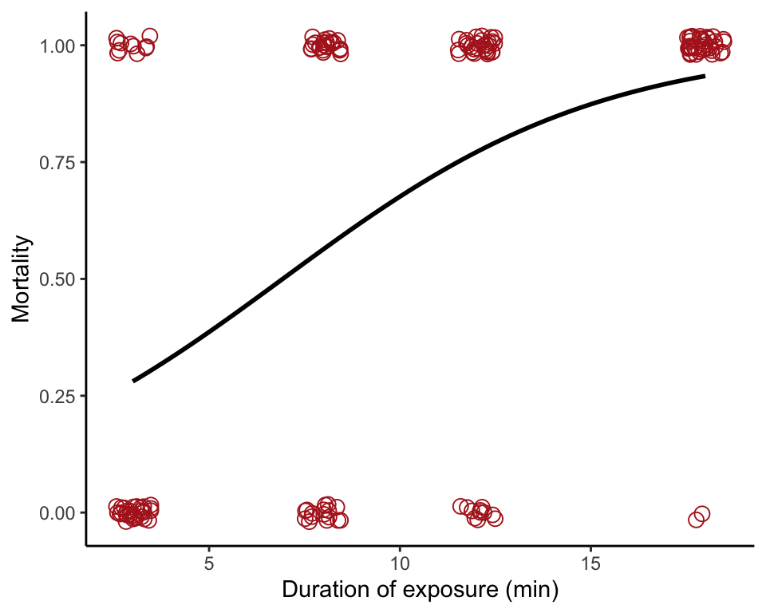
Fit a logistic regression
Use summary() to obtain estimates of regression coefficients with standard errors (Table 17.9-2).
guppyGlm <- glm(mortality ~ exposureDurationMin, data = guppy,
family = binomial(link = logit))
summary(guppyGlm)##
## Call:
## glm(formula = mortality ~ exposureDurationMin, family = binomial(link = logit),
## data = guppy)
##
## Deviance Residuals:
## Min 1Q Median 3Q Max
## -2.3332 -0.8115 0.3688 0.7206 1.5943
##
## Coefficients:
## Estimate Std. Error z value Pr(>|z|)
## (Intercept) -1.66081 0.40651 -4.086 4.40e-05 ***
## exposureDurationMin 0.23971 0.04245 5.646 1.64e-08 ***
## ---
## Signif. codes: 0 '***' 0.001 '**' 0.01 '*' 0.05 '.' 0.1 ' ' 1
##
## (Dispersion parameter for binomial family taken to be 1)
##
## Null deviance: 209.55 on 159 degrees of freedom
## Residual deviance: 164.69 on 158 degrees of freedom
## AIC: 168.69
##
## Number of Fisher Scoring iterations: 495% confidence intervals
Use confint() to calcaulate approximate 95% confidence intervals of parameters.
confint(guppyGlm)## 2.5 % 97.5 %
## (Intercept) -2.4964323 -0.8931288
## exposureDurationMin 0.1614356 0.3288161Predict mortality
Use predict() to predict probability of death (mortality) for a 10 min exposure duration, including a standard error of prediction.
predictMortality <- predict(guppyGlm, type = "response", se.fit = TRUE,
newdata = data.frame(exposureDurationMin = 10))
data.frame(predictMortality)## fit se.fit residual.scale
## 1 0.6761874 0.04421466 1Estimate the LD50
The LD50 is the estimated dose at which half the individuals are predicted to die from exposure. The dose.p() function is from the MASS package.
dose.p(guppyGlm, p = 0.50)## Dose SE
## p = 0.5: 6.928366 0.841132Analysis of deviance table
The analysis of deviance table (Table 17.9-3) is analogous to the ANOVA table. It includes a test of the null hypothesis of zero slope.
anova(guppyGlm, test = "Chi")## Analysis of Deviance Table
##
## Model: binomial, link: logit
##
## Response: mortality
##
## Terms added sequentially (first to last)
##
##
## Df Deviance Resid. Df Resid. Dev Pr(>Chi)
## NULL 159 209.55
## exposureDurationMin 1 44.86 158 164.69 2.116e-11 ***
## ---
## Signif. codes: 0 '***' 0.001 '**' 0.01 '*' 0.05 '.' 0.1 ' ' 1